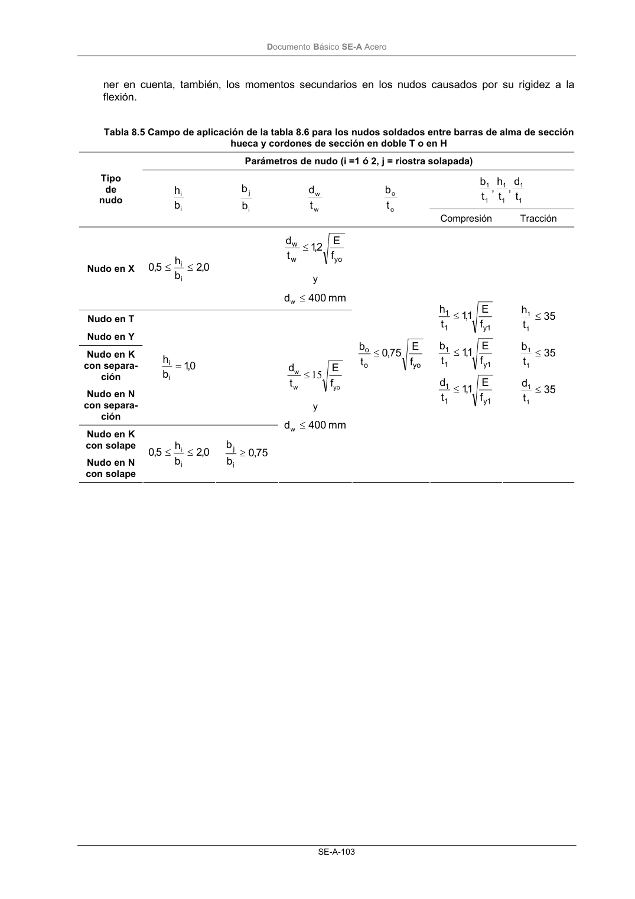

DB-SE-A · Página 105 · versión 2007-10-23
SHA256: 9ed9ea694aabfbda3bfbbef40dfe9223fde05d13c35bc2ba9751e5a96a22a64f · página física 105 de 168 · métodos de encabezado
solo si están cotejados.
Documento · ← p. 104 · p. 106 →
Formatos: Markdown · JSON de bloques · PDF p. 105 · imagen PNG
Documento Básico SE-A Acero SE-A-103 ner en cuenta, también, los momentos secundarios en los nudos causados por su rigidez a la flexión. Tabla 8.5 Campo de aplicación de la tabla 8.6 para los nudos soldados entre barras de alma de sección hueca y cordones de sección en doble T o en H Parámetros de nudo (i =1 ó 2, j = riostra solapada) 1 1 1 1 1 1 t d , t h , t b Tipo de nudo i i b h i j b b w w t d o o t b Compresión Tracción Nudo en X 0,2 b h 5,0 i i ≤ ≤ yo w w f E 2,1 t d ≤ y mm 400 dw ≤ Nudo en T Nudo en Y Nudo en K con separa- ción Nudo en N con separa- ción 0,1 b h i i = Nudo en K con solape Nudo en N con solape 0,2 b h 5,0 i i ≤ ≤ 75 ,0 b b i j ≥ yo w w f E t d 15 ≤ y mm 400 dw ≤ yo o o f E 75 ,0 t b ≤ 1 y 1 1 1 y 1 1 1 y 1 1 f E 1,1 t d f E 1,1 t b f E 1,1 t h ≤ ≤ ≤ 35 t d 35 t b 35 t h 1 1 1 1 1 1 ≤ ≤ ≤
